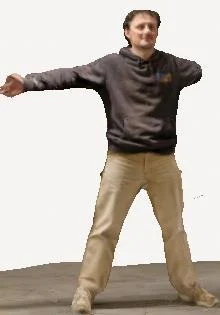

Exploration · Capture & photogrammétrie
Se numériser en 3D
Passer d’une vidéo au smartphone à un modèle 3D, et comprendre les limites de la capture.
- Cadre
- Master · 2024–2025
- Outils
- Smartphone · Polycam · Blender
- Format
- Expérimentation de numérisation
Le projet en bref.
- Le besoin
- Découvrir comment produire une représentation 3D de ma personne à partir d’une vidéo au smartphone, et comprendre les limites de la capture.
- Mon rôle
- Préparer les prises de vue, traiter les essais avec Polycam, exporter le modèle et nettoyer les éléments parasites dans Blender.
- Le résultat
- Plusieurs reconstructions reconnaissables mais encore imparfaites. Les essais montrent l’importance des angles de prise de vue, de l’éclairage et des retouches.

01 / Expérimenter la capture du corps
Expérimenter la capture du corps
Cette exploration réalisée dans le cadre du Master consiste à produire une représentation 3D de ma personne à partir d’une vidéo au smartphone. Elle permet de découvrir les étapes de la numérisation, depuis la préparation de la prise de vue jusqu’au modèle obtenu. L’objectif est aussi d’identifier les conditions qui favorisent une reconstruction lisible : éclairage, diversité des angles, stabilité du sujet et visibilité des différentes parties du corps.
Le projet présente plusieurs essais dont les résultats restent perfectibles. Leur intérêt est de montrer le processus de fabrication du modèle et les difficultés rencontrées, autant que le résultat visuel. Cette place accordée aux essais et aux limites explique son classement dans Explorations, où je rassemble des réalisations centrées sur l’apprentissage de nouvelles méthodes.
02 / De la prise de vue au modèle
De la prise de vue au modèle
La capture a été réalisée avec un Samsung Galaxy S21 5G, en tournant autour du corps et en variant les angles de la tête vers les pieds. La vidéo a ensuite été traitée avec Polycam pour obtenir une reconstruction, puis un modèle exporté au format GLTF. Le rapport décrit ce passage de la capture au maillage et les opérations de nettoyage avec Blender pour retirer les éléments extérieurs récupérés avec le corps.
Les images montrent les différences entre les essais. Certaines zones sont mieux restituées que d’autres, tandis que le sol ou des éléments de l’environnement peuvent rester attachés au sujet. Ces défauts rendent visible l’importance de la prise de vue : une zone insuffisamment observée ou un mouvement pendant la capture peut compliquer la reconstruction. Le nettoyage du modèle vient ensuite compléter le traitement automatique.


03 / Ce que les essais montrent
Ce que les essais montrent
Les modèles obtenus rendent le sujet reconnaissable, mais comportent encore des défauts de détail et des zones incomplètes. Le rapport conclut donc à un résultat partiel, utile pour découvrir la méthode et analyser ses contraintes. Cette expérimentation m’a permis de relier les conditions de capture à ce que l’on retrouve dans le modèle, puis de comprendre la place des retouches dans le passage vers un objet 3D exploitable.
Pour poursuivre ce travail, les améliorations porteraient d’abord sur une prise de vue plus régulière, un éclairage homogène et une meilleure couverture des zones difficiles. Le nettoyage des éléments parasites et la correction des parties peu lisibles constitueraient ensuite une deuxième étape. La fiche conserve plusieurs essais pour permettre cette comparaison et montrer ce que la numérisation apporte, avec ses limites actuelles.

Modélisation 3D · 3ds Max · Unity
Le tramway de Dijon
Comparer la capture à une modélisation construite manuellement sous 3ds Max.

LIRMM · ÉQUIPE ADVANSE · STAGE DE FIN D’ÉTUDES
Concevoir une expérience VR accompagnée par l’IA.
Découvrir la visualisation par Gaussian Splatting dans une expérience VR.